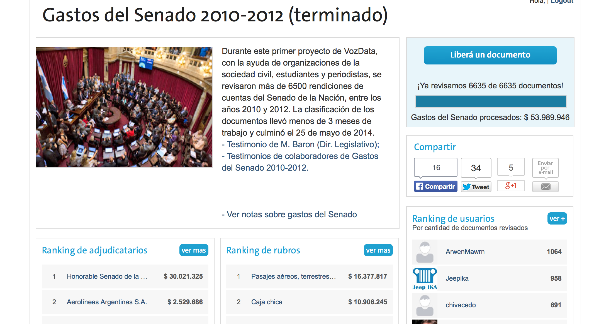
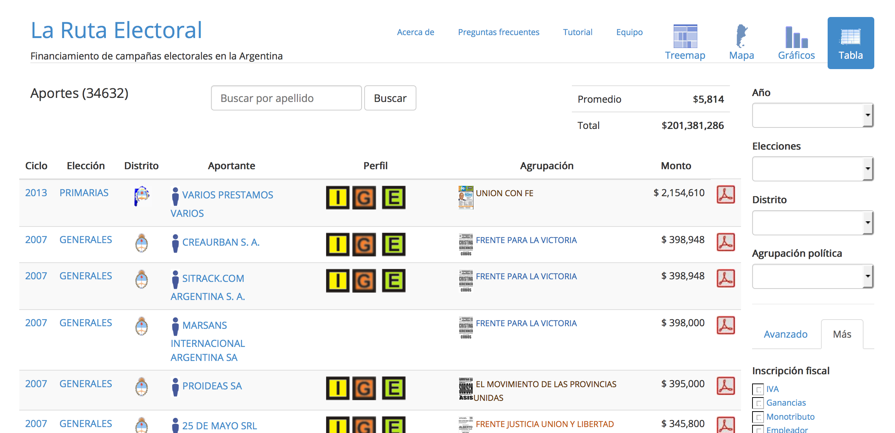

Projects from 2014 Knight-Mozilla Fellows
VozData / CrowData
Campaign Finance in Argentina
Cafe de DATA
Monthly training for journalists and activists on open data
Losing Ground
projects.propublica.org/louisiana

Monthly training for journalists and activists on open data
projects.propublica.org/louisiana